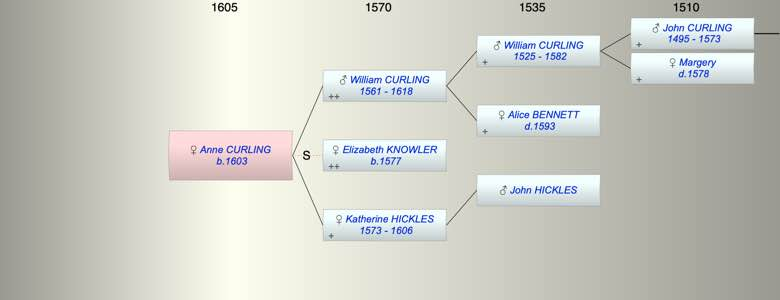

| [Index] |
| Anne CURLING (1603 - ) |
|  |
| b. 1603 at St Peters |
| Parents: |
| William CURLING (1561 - 1618) |
| Katherine HICKLES (1573 - 1606) |
| Siblings (5): |
| John (1) CURLING (1597 - 1652) |
| Mary CURLING (1598 - ) |
| Susan CURLING (1600 - ) |
| William CURLING (1609 - ) |
| William CURLING (1610 - ) |
| Events in Anne CURLING (1603 - )'s life | |||||
| Date | Age | Event | Place | Notes | Src |
| 1603 | Anne CURLING was born | St Peters | Note 1 | ||
| abt 1606 | 3 | Death of mother Katherine HICKLES (aged 33) | |||
| 1618 | 15 | Death of father William CURLING (aged 57) | Note 2 | ||
| Note 1: bap St Peters 18 Sep 1603 ex MB |
| Note 2: buried at St Lawrence on 1 Apr 1618 ex FMP PR |
| Created on a Mac™ using iFamily for Mac™ on 8 Oct 2023 |